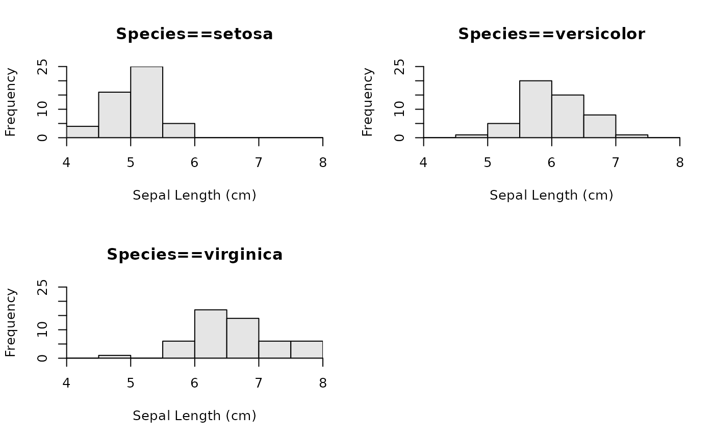

Creates separate histograms of a quantitative variable by levels of a factor variable.
# S3 method for formula hist(formula, data = NULL, main = "", right = FALSE, pre.main = "", xlab = NULL, ylab = "Frequency", same.breaks = TRUE, breaks = "Sturges", w = NULL, same.ylim = TRUE, ymax = NULL, col = "gray90", nrow = round(sqrt(num)), ncol = ceiling(sqrt(num)), byrow = TRUE, iaxs = TRUE, ...)
Arguments
| formula | A formula. See details. |
|---|---|
| data | An optional data frame that contains the variables in the model. |
| main | A character string used as the main title for when a SINGLE histogram is produced. |
| right | A logical that indicates if the histogram bins are right-closed (left open) intervals ( |
| pre.main | A character string to be used as a prefix for the main title when multiple histograms are produced. See details. |
| xlab | A character label for the x-axis. Defaults to name of quantitative variable in |
| ylab | A character label for the y-axis. Defaults to “Frequency”. |
| same.breaks | A logical that indicates whether the same break values (i.e., bins) should be used on each histogram. Ignored if |
| breaks | A single numeric that indicates the number of bins or breaks or a vector that contains the lower values of the breaks. Ignored if |
| w | A single numeric that indicates the width of the bins to use. The bins will start at “rounded” values depending on the value of |
| same.ylim | A logical that indicates whether the same limits for the y-axis should be used on each histogram. Defaults to |
| ymax | A single value that sets the maximum y-axis limit for each histogram or a vector of length equal to the number of groups that sets the maximum y-axis limit for each histogram separately. If |
| col | A string that indicates the color for the bars on the histogram. Defaults to a light shade of gray (i.e., |
| nrow | A single numeric that contains the number of rows to use on the graphic. |
| ncol | A single numeric that contains the number of columns to use on the graphic. |
| byrow | A single logical that indicates if the histograms should fill rows first ( |
| iaxs | A single logical that indicates whether both axes should be plotted using |
| … | Other arguments to pass through to the default |
Value
A graphic is produced and nothing is returned unless formula results in only one histogram. In that case, an object of class "histogram" is returned, which is described in hist.
Details
The formula must be of the form ~quantitative, quantitative~1, quantitative~factor, or quantitative~factor*factor2 where quantitative is the quantitative variable to construct the histograms for and factor or factor2 are factor variables that contain the levels for which separate histograms should be constructed.
If the formula is of the form ~quantitative or quantitative~1 then only a single histogram of the quantitative variable will be produced. This allows hist.formula() to be used similarly to hist() but with a data= argument.
The function produces a single (but see below) graphic that consists of a grid on which the separate histograms are printed. The rows and columns of this grid are determined to construct a plot that is as square as possible. However, the rows and columns can be set by the user with the nrow= and ncol= arguments. If the product of the number of rows and number of columns set by the user is less than the total number of histograms to be constructed then multiple pages of histograms will be produced (each requiring the user to click on the graph to go to the next graph). The x-axis of each separate histogram will be labeled identically. The default x-axis label is the name of the quantitative variable. This can be changed by the user with the xlab= argument.
The default for right= is not the same as that used in hist() from graphics. Thus, right-open (left-closed) bins are the default.
The iaxs= argument defaults to TRUE so that xaxs="i" and yaxs="i" are used for both axes, which eliminates the “floating” x-axis that R typically plots for histograms.
Note
Students often need to look at the distribution of a quantitative variable separated for different levels of a categorical variable. One method for examining these distributions is with boxplot(quantitative~factor). Other methods use functions in Lattice and ggplots2 but these packages have some learning ‘overhead’ for newbie students. The formula notation, however, is a common way in R to tell R to separate a quantitative variable by the levels of a factor. Thus, this function adds code for formulas to the generic hist function. This allows newbie students to use a common notation (i.e., formula) to easily create multiple histograms of a quantitative variable separated by the levels of a factor.
IFAR Chapter
3-Plotting Fundamentals.
References
Ogle, D.H. 2016. Introductory Fisheries Analyses with R. Chapman & Hall/CRC, Boca Raton, FL.
See also
Examples
## Using the defaults hist(Sepal.Length~Species,data=iris)## Add x-labels and use a pre-fix on the main labels hist(Sepal.Length~Species,data=iris,xlab="Sepal Length (cm)", pre.main="Species==")## Use different breaks and different y-axis limits for each graph hist(Sepal.Length~Species,data=iris,xlab="Sepal Length (cm)", same.breaks=FALSE,same.ylim=FALSE)## Use same but user-controlled breaks for each graph hist(Sepal.Length~Species,data=iris,xlab="Sepal Length (cm)", breaks=seq(4,8,1))## Use same but user-controlled maximum value for y-axis hist(Sepal.Length~Species,data=iris,xlab="Sepal Length (cm)",ymax=30)## Control the organization of the 'grid' of histograms hist(Sepal.Length~Species,data=iris,xlab="Sepal Length (cm)",nrow=1,ncol=3)## Use right=FALSE & freq=FALSE to demon sending an argument used by base hist() hist(Sepal.Length~Species,data=iris,xlab="Sepal Length (cm)",right=FALSE, freq=FALSE,ymax=2)## Add a junk variable to the iris data set to show two factors on RHS iris$junk <- factor(sample(c("A","B"),nrow(iris),replace=TRUE)) hist(Sepal.Length~Species*junk,data=iris,xlab="Sepal Length (cm)")## Single histogram without grouping using formula notation hist(~Sepal.Length,data=iris,xlab="Sepal Length (cm)")## Single histogram with "axis correction" turned off (compare to previous) hist(~Sepal.Length,data=iris,xlab="Sepal Length (cm)",iaxs=FALSE) ## Single histogram with "axis correction", testing xlim and ylim hist(~Sepal.Length,data=iris,xlab="Sepal Length (cm)", xlim=c(3.8,8.2),ylim=c(0,35))hist(~Sepal.Length,data=iris,xlab="Sepal Length (cm)", xlim=c(3.8,8.2),ymax=35)## Using the bin width argument hist(~Sepal.Length,data=iris,xlab="Sepal Length (cm)",w=1)hist(~Sepal.Length,data=iris,xlab="Sepal Length (cm)",w=0.25)hist(Sepal.Length~Species,data=iris,xlab="Sepal Length (cm)",w=1)hist(Sepal.Length~Species,data=iris,xlab="Sepal Length (cm)",w=0.25)## Using a vector (and not a data.frame) vec <- 1:100 hist(~vec)